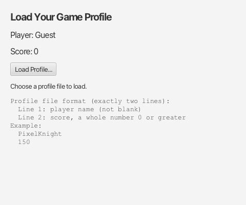
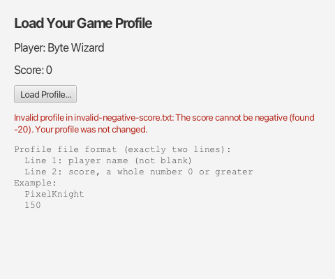

Graphics Hub · JavaFX setup and launch help
Lab 17: Loading Game Data and Handling Exceptions
Part 1: Java Treasure Hunt
Before beginning Lab17, complete the assigned expeditions in the Java Treasure Hunt.
- Obtain the completion PDF as proof and request your collectable card.
- Complete this warm-up before moving to Part 2.
Part 2: Load Your Game Profile
Your goal: load a player profile from a text file. If the file is bad, show a clear message, keep the current profile, and let the player try again.
Download the Lab17 starter (ZIP)
The window, the Load Profile button, and the file chooser already work. You will finish 5 TODOs. Each step below has the same number as a TODO in the code, and the same lettered parts (1a, 1b, ...). Time for Part 2: about 25 minutes.
| File | What it does | Your TODOs |
|---|---|---|
ProfileApp.java | The window | TODO 1, TODO 4, TODO 5 |
ProfileLoader.java | Reads and checks the file | TODO 2, TODO 3 |
PlayerProfile.java | Holds a name and a score | None. Do not change it. |
The big idea: ProfileLoader throws an exception when the file is bad. ProfileApp catches it and shows a message.

SetupOpen and run the starter
- Extract Lab17.zip. In IntelliJ, choose Open and select the Lab17 folder (the one with
pom.xml). Do not create a new project. - Use JDK 21 and let Maven load.
- Run the app: Maven tool window, Execute Maven Goal,
javafx:run. - Click Load Profile... and choose
valid-profile.txtfrom theprofilesfolder. Nothing loads yet. - Run
src/test/java/lab/RunAllTests.java. All 8 tests fail for now. That is expected.
The profile file
A profile file has exactly two lines. Line 1 is the player name (not blank). Line 2 is the score (a whole number, 0 or more).
PixelKnight
150Use these sample files from the profiles folder:
| File | Contents | Result |
|---|---|---|
valid-profile.txt | PixelKnight, 150 | Loads |
valid-zero-score.txt | Byte Wizard, 0 | Loads |
invalid-score-not-integer.txt | PixelKnight, one hundred | Error: score is not a number |
invalid-missing-score-line.txt | PixelKnight only | Error: score line missing |
invalid-blank-name.txt | (spaces), 150 | Error: name is blank |
invalid-negative-score.txt | PixelKnight, -20 | Error: score is negative |
Step 1Handle cancellationTODO 1
File: ProfileApp.java, method handleLoadProfile
Find: TODO 1: Handle cancellation.
If the player clicks Cancel, showOpenDialog returns null. Right now that causes a NullPointerException in the Run window. Cancelling is a normal choice, not an error, so use an if statement, not try/catch.
1a. If file is null, show a message with showInfo(...).
1b. Then return, so the profile does not change.
if (file == null) {
showInfo("..."); // tell the player nothing changed
return;
}Check: run the app, click Load Profile, then Cancel. Your message appears and no exception is printed.
Step 2Read the profile fileTODO 2
File: ProfileLoader.java, method load
Find: TODO 2: Read the profile file.
The method header already says throws FileNotFoundException. That sends the problem to ProfileApp. Do not write any try/catch in ProfileLoader.
2a. Open a Scanner with try-with-resources. All of your TODO 2 and TODO 3 code goes inside this block.
try (Scanner scanner = new Scanner(file)) {
// 2b, 2c, and TODO 3 go here
}- A Scanner keeps the file open until
scanner.close()is called. - If you create the Scanner inside the
( )right aftertry, Java callsclose()for you when the block ends. This happens even if an exception is thrown inside the block. - It has no
catch. Any exception still goes to the caller,ProfileApp, which is what you want here.
Compare with the Scanner from class. If an exception is thrown in the middle, the close() line never runs:
Scanner scanner = new Scanner(file);
String name = scanner.nextLine(); // if this throws...
scanner.close(); // ...this line is skipped2b. Read the name line. Always check hasNextLine() before nextLine(). If the line is missing, throw an exception with a helpful message:
if (!scanner.hasNextLine()) {
throw new IllegalArgumentException("Missing line 1: the player name.");
}
String name = scanner.nextLine().trim();2c. Read the score line the same way. Store it in a String such as scoreText.
Why nextLine() and not next()?
next() reads one word. nextLine() reads the whole line, so Byte Wizard stays together.
Step 3Validate the dataTODO 3
File: ProfileLoader.java, inside the try block, after 2c
Find: TODO 3: Validate the data.
A file can be readable and still break the rules. IllegalArgumentException means "this input is not allowed."
3a. If name is empty, throw an IllegalArgumentException with a helpful message. (name.isEmpty() works because you trimmed it.)
3b. Convert the score:
int score = Integer.parseInt(scoreText);If the text is not a whole number, parseInt throws a NumberFormatException. Do not catch it here.
3c. If score is negative, throw an IllegalArgumentException with a helpful message.
3d. Return new PlayerProfile(name, score). You create the profile only after every check passes.
3e. Delete the placeholder line throw new UnsupportedOperationException(...).
Check: run RunAllTests. All 8 tests pass.
Why do the tests check the exact exception type?
NumberFormatException is a kind of IllegalArgumentException. The tests check that a bad number gives NumberFormatException, and the other problems give IllegalArgumentException itself.
Step 4Handle exceptionsTODO 4
File: ProfileApp.java, method handleLoadProfile
Find: TODO 4: Handle exceptions.
4a. Call loader.load(file) inside a try block.
4b. Add three catch blocks in this order:
| Order | Catch | When it happens |
|---|---|---|
| 1 | FileNotFoundException | The file cannot be opened |
| 2 | NumberFormatException | The score is not a whole number |
| 3 | IllegalArgumentException | A missing line, blank name, or negative score |
4c. In each catch block, call showError(...) with a helpful message. For IllegalArgumentException, include e.getMessage(): that is the message you wrote in Steps 2 and 3.
4d. Delete the placeholder line showInfo("You chose " ...).
Here is the start. Add the other two catch blocks below it:
try {
PlayerProfile loaded = loader.load(file);
// TODO 5 goes here
} catch (FileNotFoundException e) {
showError("Could not open " + file.getName() + ". Choose another file.");
}Why the order matters
NumberFormatException is a kind of IllegalArgumentException. Java uses the first catch that matches. If IllegalArgumentException came first, the NumberFormatException catch could never run, so Java gives a compile error.
Try it (1 minute): swap those two catch blocks and build. Read the error, then swap them back.
Rules: do not use catch (Exception e), because it would also hide real bugs. Do not leave a catch block empty. Do not catch Error: an Error such as OutOfMemoryError is a problem the program cannot fix.
How can FileNotFoundException happen if I just chose the file?
It is rare here, so you do not need to test it in the app. A file can still be moved, deleted, or unreadable after it is chosen. Java also requires you to handle it. The JUnit tests check this case for you.
Check: load each invalid-... file. Each one shows a red message, and the app keeps running.
Step 5Apply the profile safelyTODO 5
File: ProfileApp.java, inside your try block from Step 4
Find: TODO 5: Apply the profile safely.
5a. After loader.load(file) returns, call showProfile(loaded).
5b. Then call showSuccess(...) with a short message.
Do not change the profile in any catch block. If load throws, Java skips the rest of the try block, so the old profile stays on screen.
Predict and explain
Suppose a different version updated the screen while it was still reading the file:
nameLabel.setText("Player: " + name); // runs
int score = Integer.parseInt(scoreText); // throws for "one hundred"
scoreLabel.setText("Score: " + score); // never runsQuestion: What would happen if the player name were updated before the score was successfully parsed? Discuss with a partner.
Check: load valid-profile.txt, then invalid-negative-score.txt, then valid-zero-score.txt. After the failed load, PixelKnight and 150 are still shown. The last file loads Byte Wizard and 0.

HelpIf something does not work
- "unreported exception FileNotFoundException": put
loader.load(file)inside your try block. - "exception NumberFormatException has already been caught": put the
NumberFormatExceptioncatch before theIllegalArgumentExceptioncatch. - NoSuchElementException in a test: check
hasNextLine()before eachnextLine(). - Blank-name test fails:
trim()the line before checkingisEmpty(). - The name changes and an error also shows: call
showProfileonly inside the try block, afterloadreturns.
Submit
- Run
RunAllTests. All 8 tests pass. - Run the app one last time: load a valid file, an invalid file, Cancel, then a valid file again.
- Upload these 2 files from
src/main/java/labto Lab 17 on Gradescope. Keeppackage lab;on the first line.ProfileLoader.javaProfileApp.java
The autograder tests your ProfileLoader (TODO 2 and TODO 3). It runs a few more tests than the 8 you have. It checks that spaces around each line are trimmed, that a decimal score such as 12.5 gives NumberFormatException, and that every IllegalArgumentException you throw has a message.
Connect to your final project
Identify one operation in your final project that could fail. What should the player see, and what game state should be preserved?
Examples: loading a level file, reading a high-score file, or reading a number typed into a text field. Add try/catch only where something can actually fail.